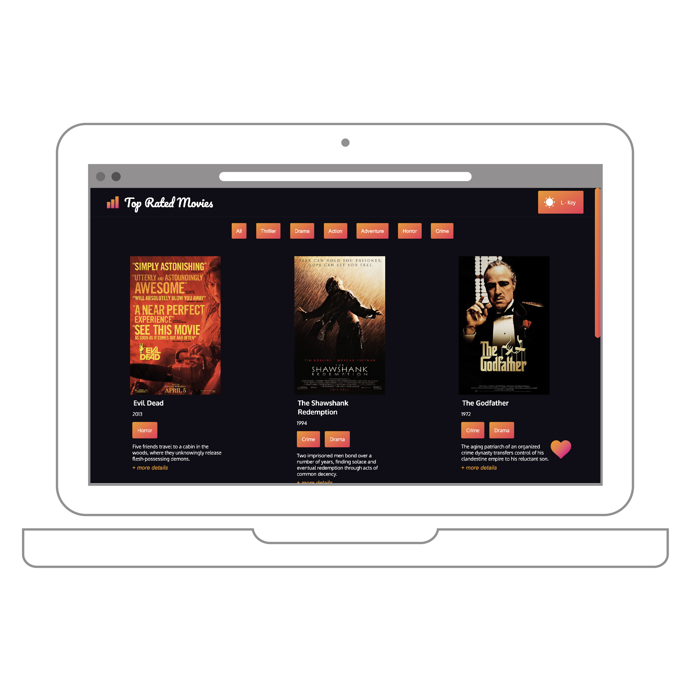
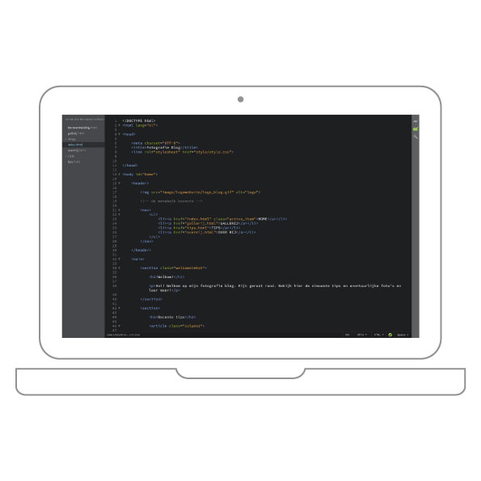

Portfolio
-

Top Rated Movies
Frontend voor Designers
Maart 2020
Door middel van Design Principles gecodeerde website met inladen een JSON file
-

Blog in html/css
Internetstandaarden
December 2018
Een fotografie blog gecodeert met HTML&CSS, gefocust op de semantisch correcte code.
-

StudySpot
Project Individueel
December 2018
Een ontworpen website voor internationale studenten om de beste studieplek te vinden.